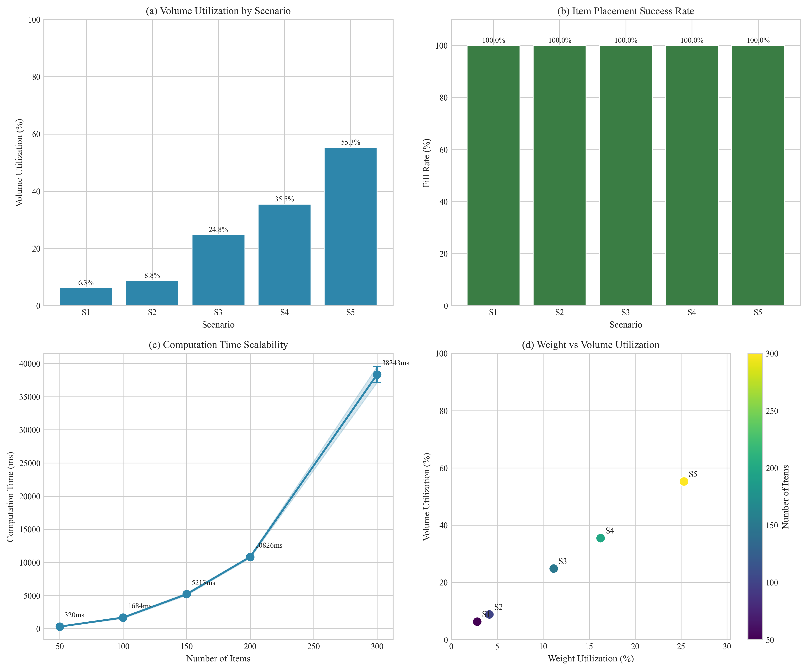

- Inefisiensi Manual: Perencanaan muatan kontainer saat ini sangat bergantung pada intuisi operator, menyebabkan ruang kosong yang tidak optimal.
- Kesenjangan Alat (The Gap): Algoritma optimasi (3D-BPP) sudah ada, namun alat yang tersedia ditujukan untuk peneliti, bukan untuk operator gudang.
- Kesulitan Eksekusi: Rencana muatan yang optimal di atas kertas sulit dieksekusi secara fisik tanpa panduan visual yang jelas.
+
+
+
Interactive 3D Bin Packing System for Optimized Container Loading Operations
Latar Belakang & Masalah
Tujuan Penelitian
Mengembangkan sistem perencanaan muatan berbasis web yang mengintegrasikan algoritma 3D Bin Packing dengan Visualisasi Interaktif untuk memandu operator secara langkah-demi-langkah.
Metodologi & Algoritma
1. Arsitektur Sistem
graph TD
A["Frontend Web
Next.js + Three.js"] -->|HTTP/JSON| B["Backend API
Go (Gin Framework)"] B -->|SQL| C[("Database
PostgreSQL")] B -->|gRPC/HTTP| D["Packing Service
Python + py3dbp"] classDef box fill:#fff,stroke:#2c3e50,stroke-width:2px,rx:5,ry:5; class A,B,C,D box;
Next.js + Three.js"] -->|HTTP/JSON| B["Backend API
Go (Gin Framework)"] B -->|SQL| C[("Database
PostgreSQL")] B -->|gRPC/HTTP| D["Packing Service
Python + py3dbp"] classDef box fill:#fff,stroke:#2c3e50,stroke-width:2px,rx:5,ry:5; class A,B,C,D box;
2. Algoritma & Batasan (Constraints)
Menggunakan pendekatan Constructive Heuristic (Bigger First) dengan batasan fisik yang ketat:
- Volume & Berat: Total muatan tidak boleh melebihi kapasitas dan batas berat kontainer.
- Orientasi (6 Sumbu): Rotasi barang dibatasi sesuai jenisnya (misal: "This Side Up").
- Non-Overlapping: Posisi barang tidak boleh saling tumpang tindih dalam ruang 3D.
- Stabilitas (75% Rule): Barang hanya ditempatkan jika min. 75% alasnya tertopang oleh barang di bawahnya.
- Load Bearing: Barang di bawah harus mampu menahan berat total tumpukan di atasnya.
Visualisasi Interaktif

Hasil Eksperimen (S1 - S5)
100%
Fill Rate (Semua Skenario)
55.26%
Volume Utilization (Skenario Terkompleks - S5)
< 40 Detik
Waktu Komputasi (300 Item)

Strategi Bigger First terbukti 43% lebih efisien dibandingkan Smaller First.
Tantangan & Batasan
- Optimasi Lokal vs Global: Pendekatan heuristik saat ini memprioritaskan kecepatan komputasi, namun belum menjamin solusi optimal global yang mungkin dicapai dengan Meta-Heuristics.
- Kompleksitas Geometri: Sistem saat ini dikhususkan untuk kargo berbentuk kubus/balok (rectangular) dan belum mendukung geometri ireguler.
- Validasi Operasional: Pengujian berfokus pada simulasi data; validasi empiris melalui studi lapangan dengan operator logistik diperlukan untuk konfirmasi efektivitas praktis.
Kesimpulan
Sistem ini berhasil menjembatani kesenjangan antara optimasi algoritma dan eksekusi fisik. Fitur visualisasi langkah-demi-langkah memungkinkan rencana muatan yang kompleks dapat dilaksanakan dengan mudah oleh operator gudang tanpa memerlukan instalasi perangkat lunak khusus.